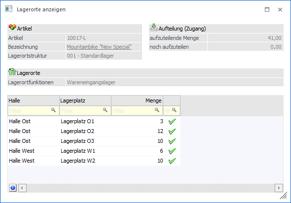
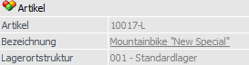
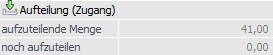
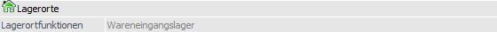
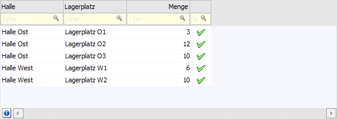
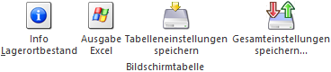
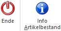

Wird in der Tabelle "Belegmitte" des Fenster "Belege" bzw. "Belege - Matchcode" ein Doppelklick auf die Lagerort-Kugel durchgeführt, so wird das Fenster "Lagerorte anzeigen" geöffnet. In diesem werden die erfassten Lagerorte zur aktuellen Belegzeile dargestellt.

Artikel

Ø Artikel
An dieser Stelle wird die Artikelnummer angezeigt, für welche Lagerorte erfasst werden.
Ø Bezeichnung
In diesem Feld wird die Bezeichnung des Artikels dargestellt.
Ø Lagerortstruktur
Hier wird die Lagerortstruktur des Artikels angezeigt.
Aufteilung

Ø Aufteilung (x)
In der Überschrift des Bereichs wird angezeigt, ob es sich um einen Zugang (Einlagerung) oder einen Abgang (Entnahme) handelt.
ü - Einlagerung
ü - Entnahme
Ø aufzuteilende Menge
An dieser Stelle wird die Menge der Belegzeile dargestellt.
Ø noch aufzuteilen
Hier wird die Menge, welche noch aufgeteilt werden kann bzw. muss, angezeigt.
Lagerorte

Ø Lagerortfunktionen
An dieser Stelle werden die Lagerortfunktionen, welche gemäß der Belegart des Belegs zugelassen sind, angezeigt.
Tabelle "Lagerorte"

In der Tabelle der Lagerorte werden die erfassten Lagerorte mit den jeweiligen Mengen dargestellt. Mit Hilfe der rechten Maustaste (Funktion "Spalten anzeigen / verstecken") können diverse optionale Spalten eingefügt werden.
Tabellenbuttons

Ø Info Lagerortbestand
Mit Hilfe des Buttons "Info Lagerortbestand" wird das Auswertungsfenster "Bestand - Lagerorte" geöffnet und zeigt alle Artikel des ausgewählten Lagerorts an.
Ø Ausgabe Excel
Durch Anwahl des Buttons "Ausgabe Excel" wird der Inhalt der Tabelle an Microsoft Excel übergeben.
Ø Tabelleneinstellungen speichern
Die Spalten einer Tabelle können grundsätzlich an beliebige Positionen verschoben, bzw. in der Breite entsprechend angepasst werden. Durch Anwahl des Buttons "Tabelleneinstellungen speichern" werden die Einstellungen benutzerspezifisch gespeichert und bei dem nächsten Aufruf des Programmpunktes wieder vorgeschlagen.
Ø Gesamteinstellungen speichern…
Im Gegensatz zu "Tabelleneinstellungen speichern" können mit "Gesamteinstellungen speichern" mehrere Tabellenaufbauten gespeichert und nach Wunsch geladen werden. Zusätzlich werden Sonderfunktionen der Tabelle (z.B. "Spalte gruppieren") ebenfalls bei der Speicherung bedacht.
Buttons

Ø Ende
Mit Hilfe des Buttons "Ende" bzw. der Taste ESC wird das Fenster geschlossen.
Ø Info Artikelbestand
Durch Anwahl des Buttons "Info Artikelbestand" wird die Auswertung "Artikel - Lagerorte" geöffnet. In dieser werden die Lagerorte des Artikels mit Bestand angezeigt.